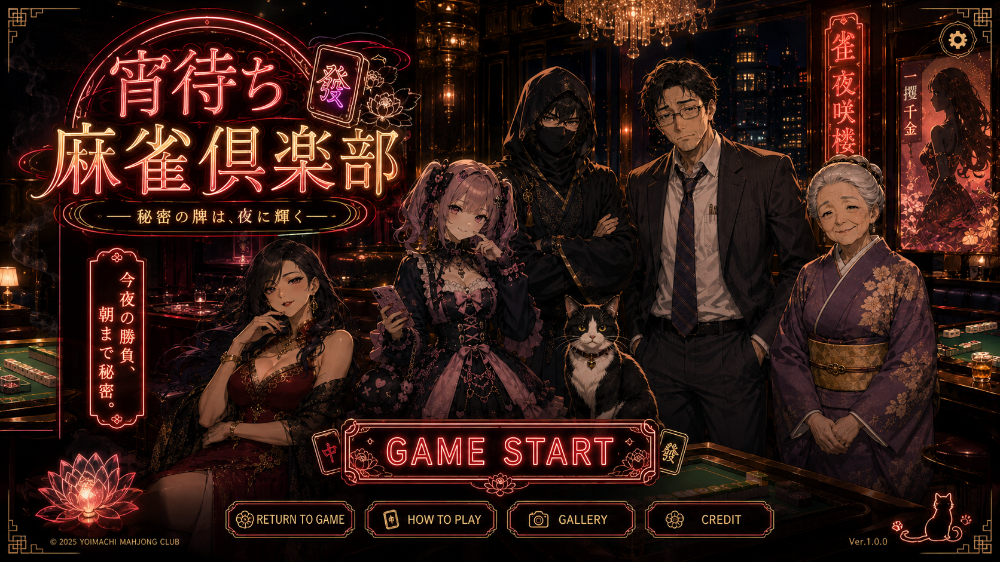

0 / 3
HOW TO PLAY - 遊び方
- 日本式の四人打ち麻雀(東風戦)です。持ち点25,000点、東一局〜東四局を戦います。
- 牌をクリックして選択、もう一度クリックで捨てます。
- 3枚組(刻子・順子)を4つと雀頭をそろえ、役のある形で和了(あがり)を目指します。
- 他家の捨て牌に対してロン・ポン・カン・チーのボタンが点灯します。チーは左の人(上家)からのみ。
- テンパイしたらリーチ。1,000点を供託して宣言します。
- 山が尽きると流局。ノーテンの人は罰符を支払います。
- 誰かが0点未満になるか東四局が終わると対局終了。1位を目指しましょう。
6人の候補から対戦相手を3人選べます。選んだ順に右席・対面・左席へ座ります。
SETTINGS - 設定
BGM
効果音
音量
60
打牌操作
BACKUP DATA - データの保管
記録はこのブラウザ内に保存されます。ブラウザのデータ削除、シークレットモード、端末変更などにより消える場合があります。大切な記録はバックアップを書き出してください。
セーブデータの初期化
セーブデータは、この端末のブラウザ内にのみ保存されます。外部サーバーには保存していません。ブラウザのデータ削除・シークレットモード・端末の変更・不具合などで消えた場合、復元や補償はできません。
和了アルバム - AGARI ALBUM
YOIMACHI MAHJONG CLUB
CREDIT
西
北
東一局
0本場
供託 0
山 70
ドラ
南
東
上家
北左家
250001位
対面
西対面
250001位
東あなた
250001位
下家
南右家
250001位
チーする組み合わせを選択
TONIGHT'S PLAYERS
今夜も、よろしくお願いします
綾乃
▼
本ゲームはPCまたは横向きのタブレットでお楽しみください。